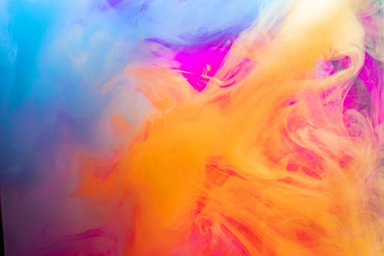
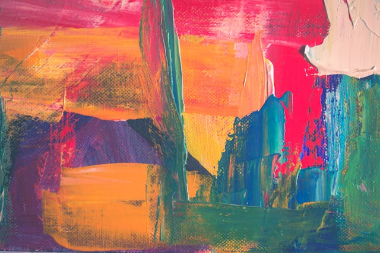
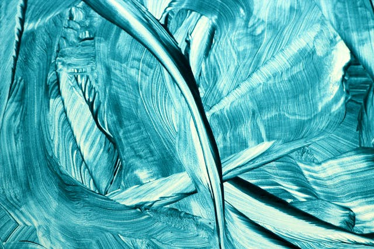
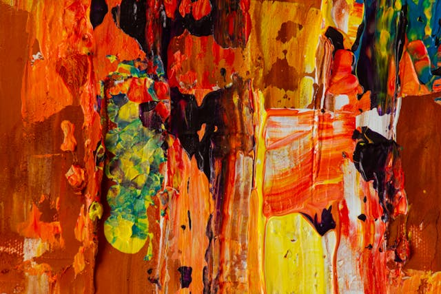
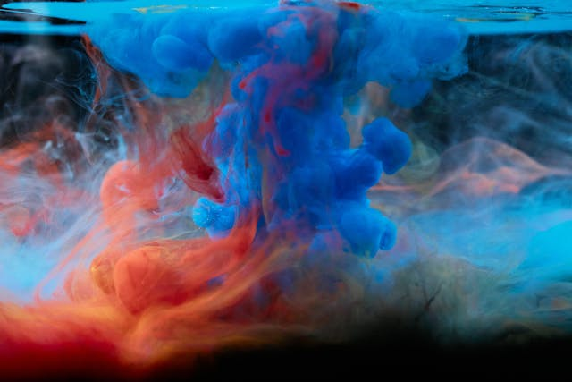

<!--link a bootstrap-->
<link href="https://cdn.jsdelivr.net/npm/bootstrap@5.3.3/dist/css/bootstrap.min.css" rel="stylesheet" integrity="sha384-QWTKZyjpPEjISv5WaRU9OFeRpok6YctnYmDr5pNlyT2bRjXh0JMhjY6hW+ALEwIH" crossorigin="anonymous">

<link rel="stylesheet" href="../assets/style.css">
<script type="text/javascript">
    window.onload = function(){
    (function(d, script) {
    script = d.createElement('script');
    script.type = 'text/javascript';
    script.async = true;
    script.src = 'https://w.app/widget-v1/daVOh6.js';
    d.getElementsByTagName('head')[0].appendChild(script);
    }(document));
    };
    </script>
<header>
    
    <div class="content-box">
        
    </div>
   <!--Nav de bootstrap-->
   <nav class="navbar navbar-expand-lg fondonavbar">
    <div class="container-fluid">

      <button class="navbar-toggler" type="button" data-bs-toggle="collapse" data-bs-target="#navbarSupportedContent" aria-controls="navbarSupportedContent" aria-expanded="false" aria-label="Toggle navigation">
        <span class="navbar-toggler-icon"></span>
      </button>
      <div class="collapse navbar-collapse" id="navbarSupportedContent">
        <ul class="navbar-nav me-auto mb-2 mb-lg-0">
          <li class="nav-item hovercolor">
            <a class="nav-link" aria-current="page" href="../index.html">Inicio</a>
          
          </li>
          <li class="nav-item hovercolor">
            <a class="nav-link" href="../pages/sobremi.html">Sobre mi</a>
          </li>
          <li class="nav-item hovercolor coloractivo">
            <a class="nav-link" href="../pages/productos.html">Productos</a>
          </li>
          <li class="nav-item hovercolor">
            <a class="nav-link" href="../pages/contacto.html">Contacto</a>
          </li>
          
        </ul>
        
      </div>
    </div>
  </nav>
</header>
   <main>
    <section>
         <!--Grilla de productos-->
        <div class="contenedor-grid">
            
            <p class="grid-texto1">Título: "La persistencia de la memoria"Autor/a: Fecha: 2025Género: Pintura, surrealismoContexto: La obra fue creada en el contexto de la Europa de principios del siglo XX, una época marcada por el surrealismo y la exploración del subconsciente.Temática principal: El paso del tiempo y su relación con la percepción humana, mostrando relojes derretidos como metáforas de la relatividad del tiempo...
              <a class="button+info" href="../pages/productosinfoobra1.html">+info</a>
            </p>
        
            
            <p class="grid-texto2">Título:"Pasillo sin fin" "Pasillo sin fin" invita a la reflexión sobre la percepción del tiempo y el espacio, cuestionando las decisiones que tomamos en la vida y el sentido de avanzar o retroceder, a menudo en busca de algo que nunca parece llegar. 
              <a class="button+info" href="../pages/productosinfoobra2.html">+info</a>
            </p>

            
            <p class="grid-texto3">Título:"Colores" "Pasillo sin fin" es una obra que evoca una sensación de claustrofobia, soledad y repetición, a través de la representación de un pasillo largo e interminable. Este pasillo podría estar lleno de puertas cerradas, cada una que no conduce a ningún lugar nuevo, generando una sensación de estancamiento o atrapamiento. La obra podría explorar temas como la búsqueda constante de salida, el ciclo interminable de la rutina diaria o la sensación de estar perdido en un espacio sin salida. El uso del espacio y la perspectiva podría acentuar la idea de lo infinito, haciendo que el espectador sienta una desconexión con el resto del mundo.
              <a class="button+info" href="../pages/productosinfoobra3.html">+info</a>
            </p>
            
            
            <p class="grid-texto4">Título:"Bandera" "Bandera" es una obra que utiliza el símbolo de la bandera para explorar temas de identidad, 
              pertenencia y pertenencia nacional. A través de la representación de una bandera, ya sea de forma literal o estilizada, 
              la obra invita a reflexionar sobre los valores, las luchas o las tensiones que ese símbolo puede representar. 
              Puede jugar con los colores, las formas o incluso la descomposición de la bandera para transmitir un mensaje sobre la unidad, 
              la división o el conflicto, haciendo que el espectador cuestione lo que realmente significa el patriotismo o la lealtad a un país. 
              La obra puede ser una declaración visual que trasciende las fronteras físicas y culturales, invitando a una interpretación personal 
              y emocional.
              <a class="button+info" href="../pages/productosinfoobra4.html">+info</a>
            </p>
           
           
            
            <p class="grid-texto5">Título:"paisaje" "Paisaje" es una obra que captura la esencia de la naturaleza, ya sea a través 
              de un paisaje realista o abstracto. Representa una escena de exteriores, como montañas, bosques, campos o mares, invitando 
              al espectador a sumergirse en la serenidad y belleza del entorno natural. La obra puede jugar con la luz, el color y 
              la textura para evocar distintas emociones, desde la calma hasta la majestuosidad o la melancolía. A través del paisaje, 
              se exploran no solo la relación entre el hombre y la naturaleza, sino también las sensaciones que el entorno puede despertar, 
              como la paz, la reflexión o la conexión con el mundo que nos rodea.
              <a class="button+info" href="../pages/productosinfoobra5.html">+info</a>
            </p>

        </div>
    </section>
   </main>
   <!--Scripts bootstrap-->
   <script src="https://cdn.jsdelivr.net/npm/bootstrap@5.3.3/dist/js/bootstrap.bundle.min.js" integrity="sha384-YvpcrYf0tY3lHB60NNkmXc5s9fDVZLESaAA55NDzOxhy9GkcIdslK1eN7N6jIeHz" crossorigin="anonymous"></script>

   <footer class="footer">
    <div class="footer-content">
      <div class="social"> 
        <a class="social-elem" href="https://instagram.com" target="_blank">
          
        </a>
        <a class="social-elem" href="https://x.com" target="_blank">
          
        </a>
        <a class="social-elem" href="https://behance.net" target="_blank">
          
        </a>
        <a class="social-elem" href="https://gmail.com" target="_blank">
          
        </a>
    </div>            
 </footer>
